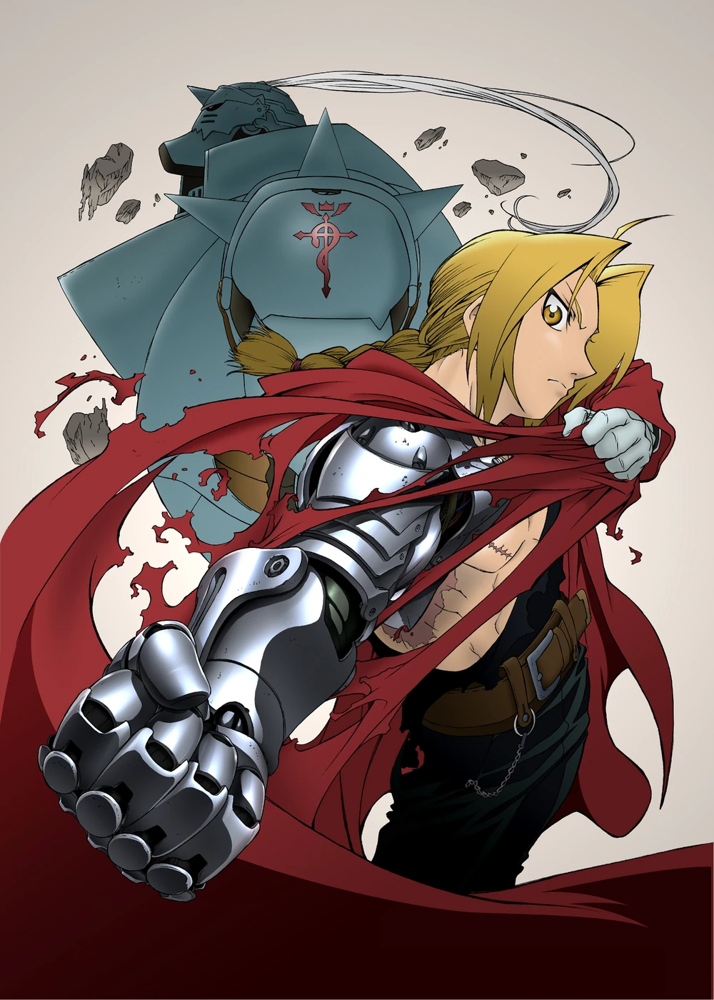
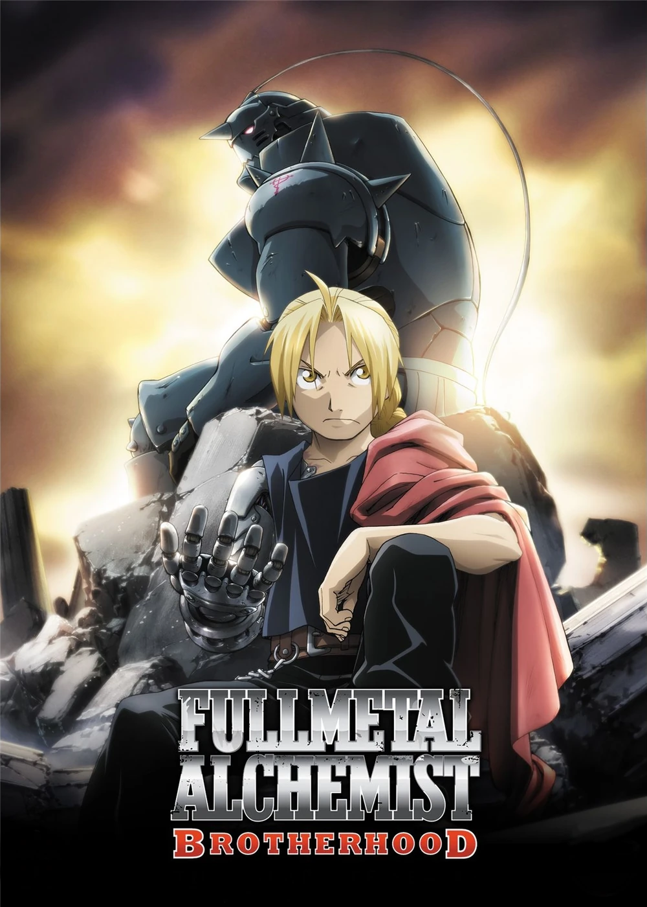

Produções do Anime
Conheça as diferenças entre as duas adaptações para anime
Fullmetal Alchemist (2003)
2003-2004

Episódios
51 episódios
História
Segue uma narrativa original após divergir do mangá, criando seu próprio final.
Tom
Mais sombrio e filosófico, com foco em temas existenciais.
Fullmetal Alchemist: Brotherhood
2009-2010

Episódios
64 episódios
História
Adaptação fiel ao mangá original, seguindo a história completa.
Ton
Equilibra humor e drama, mantendo o tom do mangá original.
Principais Diferenças
Origem dos Homunculus
2003
Criados por tentativas falhas de transmutação humana.
Brotherhood
Criados artificialmente pelo antagonista principal.
Mundo Paralelo
2003
Explora um mundo paralelo semelhante à nossa realidade.
Brotherhood
Mantém-se no mesmo universo, sem mundos paralelos.
Desfecho
2003
Final mais agridoce, com separação dos irmãos.
Brotherhood
Conclusão mais otimista e fiel ao mangá.